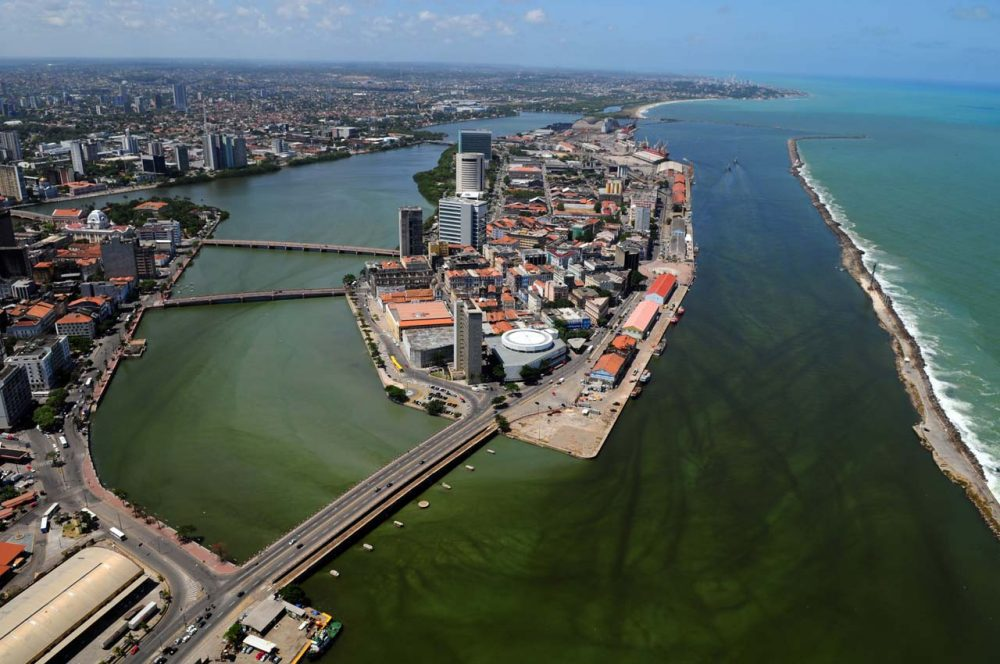

Sobre o Marco Zero
O Marco Zero é um dos pontos turísticos mais famosos da cidade de Recife, capital de Pernambuco. Localizado na Praça Rio Branco, ele marca o início da contagem das distâncias rodoviárias de Pernambuco para outras cidades do estado.
Além disso, o Marco Zero é também um importante ponto de encontro da população local e um espaço cultural, onde diversas manifestações artísticas e culturais acontecem ao longo do ano.
Galeria de Fotos


Localização
O Marco Zero está localizado na Praça Rio Branco, no bairro do Recife, centro histórico da cidade. Ele fica próximo a outros pontos turísticos famosos, como a Torre Malakoff e o Paço do Frevo.
Endereço: Praça Rio Branco, Recife - PE, Brasil